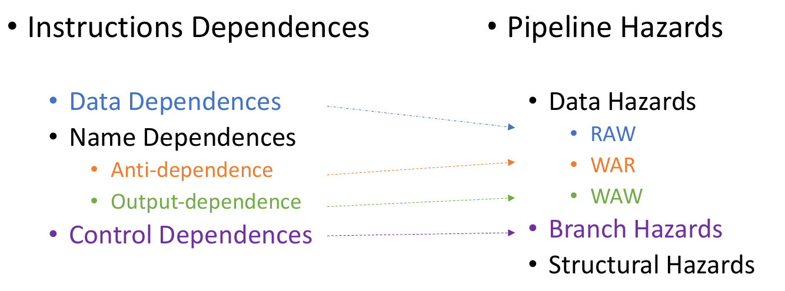
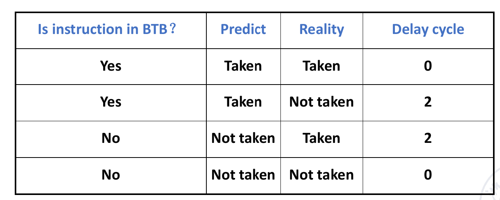
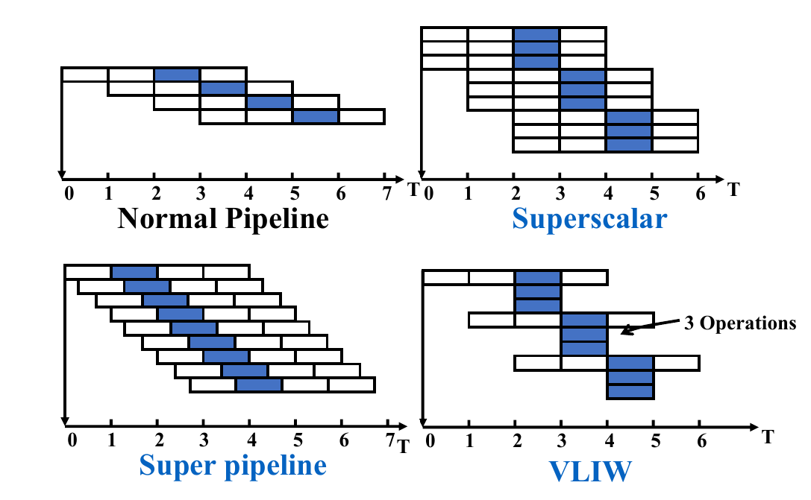
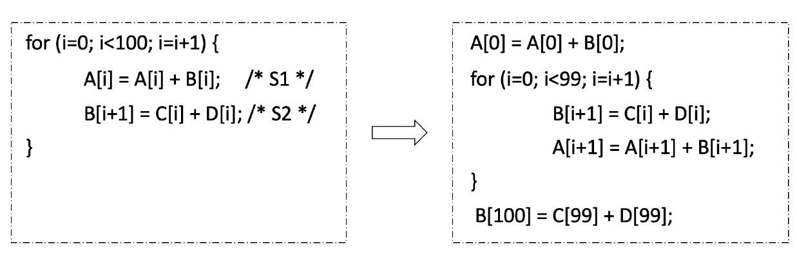
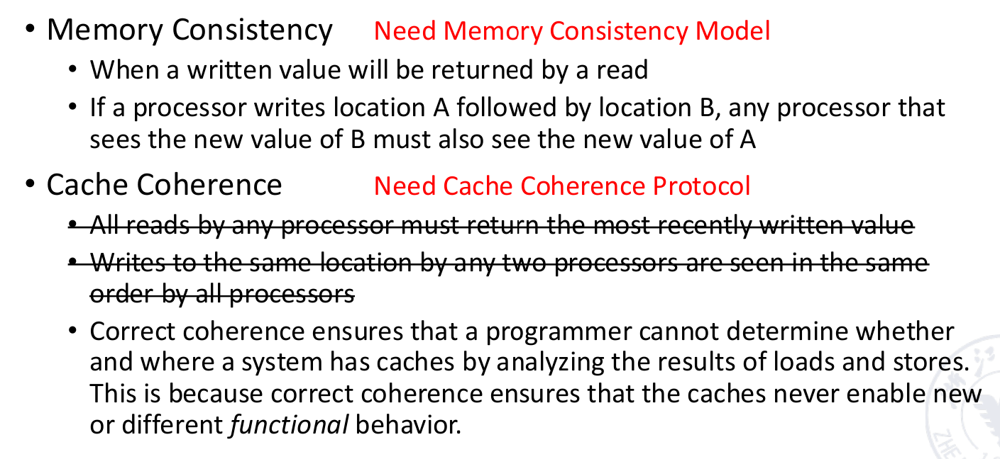

计算机体系结构
Chapter 1
一些公式

芯片进化
-
Moore's Law
-
Dennard Scaling（微缩）
-
Post-Moore's Era
-
继续微缩
-
封装技术
-
高性能计算（如量子计算）
-
-
Multi-Core parallelism
-
Amdahl's Law: \(S = \frac{1}{(1-P)+\frac{P}{N}}\)
-
Data-level parallelism
-
Task-level parallelism
-
Instruction-level parallelism
-
Thread-level parallelism
-
种类
-
PMD（便携式移动设备）
-
Desktop
-
Server
-
Cluster / WSC(warehouse-scale computer)
-
Embedded
Power & Energy
Power(功率) 代表单位时间的能量消耗，单位是瓦特
Energy(能量) 代表总的能量消耗，是功率对时间的累积
因此，功率低不代表最终的能量消耗低
Energy-Save Strategy
-
Do nothing well
关闭不必要的任务
-
DVFS(Dynamic Voltage and Frequency Scaling)
动态调整电压和频率
-
Design for typical case
为典型情况设计
-
Overclocking - Turbo mode
超频，缩短任务时间来降低总消耗
Reliability
一些概念
- MTTF(Mean Time To Failure)
- MTTR(Mean Time To Repair)
- MTBF(Mean Time Between Failure) = MTTF + MTTR
- Availability = MTTF / MTBF
-
FIT(Failures per billion hours) = \(\frac{1}{MTTF}\)
Fault （潜在BUG）-> Error（触发了潜在BUG） -> Failure（造成明显后果）
-
Dependability V/S Redundancy
-
Time Redundancy
多次重复执行同一个任务，来避免错误
-
Resource Redundancy
多个资源，如多个disk, 来降低系统崩溃的概率
-
RAID
Performance
- CPU time
- Elapsed time(Wall-clock time / Response time)
-
Benchmark
Benchmark是一种用来评估计算机性能的方法，通常是一段程序或者一组程序，用来测试计算机的性能
- SPEC(Systerm Performance Evaluation Corporation)
Quantitative Principle
-
Parallelism
- Amdahl's Law
-
Locality
-
Temporal Locality(时间局部性)
-
Spatial Locality(空间局部性)
-
-
CPU Performance
-
\(CPU_{time} = IC \times CPI \times T\)
-
\(CPI = \frac{Cycles}{Instruction}\)
-
\(T = \frac{Seconds}{Cycle}\)
-
\(IC = Instruction Count\)
-
-
\(IPC = \frac{1}{CPI}\)(CPU throughput)
-
Chapter 2
一些概念
- Latency
- Access Time: 从CPU发出请求到数据返回的时间
- Cycle Time: 两次连续的访问之间的时间
- Bandwidth
- Throughput: 每秒传输的数据量
Miss
| 种类 | 解释 |
|---|---|
| compulsory miss | 冷启动失配，刚上电cache是空的，所以不论什么访问都要miss一次。cache越大compulsory miss越多。 |
| capacity miss | cache的容量大小不满足程序局部性时发生的失配，称为容量失配。cache的总大小增大，容量失配率减小，与关联度无关。 |
| conflict miss | 在采用组关联和直接映像方式的cache中，主存的很多块都映射到cache的同一块，如果某块本来在cache中，刚被替换出去，又被访问到。有点像 OS 里页替换时讲到的“抖动”。关联度越大，Conflict失配越小。 |
优化DRAM
- Timing Signal： 连续访问不用再次激活
- Spatial Locality： 一次读取多个数据
- Wider DRAM: 提高贷款
- DDR: Double Data Rate
- Multiple Banks: 并行访问
- Dynamic Energy Saving: 动态调整电压和频率
优化Cache
Average Memory Access Time (AMAT) = Hit Time + Miss Rate x Miss Penalty
-
Larger Block Size
-
降低compulsory miss rate
-
降低static power
-
增加miss penalty（larger blocks)
-
增加capacity/confilct miss rate (fewer blocks)

-
-
Larger Cache Size
-
降低miss rate(capacity miss)
-
增加hit time
-
增加cost, power
-
-
Higher Associativity
-
降低conflict miss rate
-
增加hit time
-
增加power
-
-
Multilevel Caches
-
减少 miss penalty
-
减少power
-
Multilevel inclusion
L1 cache的所有块都在L2 cache中，L2 cache的所有块都在L3 cache中，以此类推
-
Multilevel exclusion
L1 cache的所有块都不在L2 cache中，L2 cache的所有块都不在L3 cache中，以此类推
Tip
AMAT = Hit time\(_{L1}\) + Miss rate\(_{L1}\) x(Hit time\(_{L2}\) + Miss rate\(_{L2}\) x Miss penalty\(_{L2}\))
-
-
Prioritize Read Misses Over Writes
- 减少miss penalty
-
Avoiding Address Translation
-
减少hit time
-
手段
-
Virtual Address -> Physical Address
-
TLB(Translation Lookaside Buffer)
-
Virtual Memory
本质上，初始的想法就是每次读取数据读两次，一次是到页表获取物理地址，一次是从物理地址读取数据
为了减少开销，使用TLB这个高速cache（不在内存中，速度比内存快）来存储最近访问的数据的物理页地址，从而减少访问页表的次数
page size
- Small: 减少内存碎片带来的浪费
- Large: 减少TLB entries 和 TLB miss rate
- Multiple
-
超级优化

-
Small and Simple L1-Cache
- Small size
- 增加时钟主频
- 减少功耗
- Lower associativity
- 减少hit time
- 减少功耗
- Small size
-
Way Prediction
- 降低conflict miss 和 hit time
- 添加block predictor bit，每次先通过预测的方式找到对应的block，同时并行进行正常的比较选择
-
Pipelined Access
- 通过pipeline的方式来访问cache
- 增加带宽
- 会导致更高的延迟和预测penalty
-
Multibanked Caches
- 通过多个bank并行访问，增大带宽，减少访问时间
- 一般需要把地址“打散”到不同的bank中，从而可以并行访问
-
Non-blocking Caches
- 当出现miss时，不会阻塞后续的访问，从而提高效率
- hit under miss
- miss under miss
- hit under multiple misses
- 当出现miss时，不会阻塞后续的访问，从而提高效率
-
Critical Word First
- 每次miss时总是从内存中读取一片数据，但CPU需要的只需要其中一部分。因此可以先返回cache line中需求的关键数据，然后再返回其他数据
- 降低miss penalty
-
Early Restart
- 读到CPU需要的数据后，CPU可以先开始执行，而不用等到整个cache line都读取完毕（往往就是配合上面的Critical Word First）
-
Merging Write Buffer
- 把多个写请求打包成一个写请求，减少写请求的次数
- 降低miss penalty
-
Compiler Optimization
- 通过编译器优化，增加局部性，从而减少miss rate
-
Loop interchange
通过调整循环次序，使得内存访问更加连续
Example

-
Blocking
通过分块，使得内存访问更加连续，如矩阵乘法
Example
-
Hardware Prefetching
- 通过预测CPU的访问模式，提前把数据读入cache
- 降低miss rate和miss penalty（但是也可能造成额外的miss）
- Instruction prefetch
- Data prefetch
-
Compiler Prefetching
- 通过编译器预测CPU的访问模式，加入prefetch，提前把数据读入cache
- Register prefetch
- Cache prefetch
- 降低miss rate和miss penalty
- 通过编译器预测CPU的访问模式，加入prefetch，提前把数据读入cache
-
HBM
- 先进封装技术，使用high-bandwidth memory作为L4 cache（对于一般的DRAM,需要多次访问才能读取完整的cache line，一次访问tag, 一次访问data）
- 把 tag 和 data 放在同一行中
- alloy cache, 把tag和data混合在一起
- 先进封装技术，使用high-bandwidth memory作为L4 cache（对于一般的DRAM,需要多次访问才能读取完整的cache line，一次访问tag, 一次访问data）
Protection
Virtual Memory
4 Tasks
- User Mode / Kernel Mode
- Accessible Processor state
- Mode Switch
- Limit Memory Access
Virtual Machine
VM: a protection mode with a much smaller code base than the full OS
VMM: software that supports VMs
Host: underlying OS
-
优势
- 同一个物理机上可以运行多个虚拟机
- 多个虚拟机可以共享硬件资源
- 隔离性、安全性、隐私性高
-
劣势
- 微小的性能下降
Chapter 3
ILP (Instruction Level Parallelism)
RiscV


Pipelining
通过流水线并行提高总体的运行效率（latency hidding）
注意load balance，或者增加流水线层级来降低某一环节的延迟，因为流水线的频率取决于最慢的环节

-
Floating-Point Operation
一般来说，浮点数运算的延迟比整数运算要长
-
降低时钟频率：导致整个流水线其他指令的速度也会下降
-
多个功能单元：增加硬件成本，从而加速浮点数运算
-
-
Structure Hazard
-
Hardware Bandwidth
- 通过增加硬件资源，增加带宽，从而提高效率
-
Interlock Detection
- ID、MEM冲突，进行重新排序
-
-
Data Hazard
-
WAW（Write After Write）
- 两个指令同时写入，后者会覆盖前者的结果，可能会由于指令运行速度不同而导致错误（比如前面的指令运行较慢，后面的指令先写入，导致最终留下了前面指令的写入结果）
-
RAW（Read After Write）
- 一个指令读取了另一个指令的写入结果，但是另一个指令还没有写入，导致读取错误的结果，因此需要等待另一个指令写入完成再读取
-
WAR（Write After Read）
- 一个指令写入了一个寄存器，另一个指令读取了这个寄存器，但是读取的指令先执行，导致读取错误的结果，因此需要等待写入完成再读取
-
-
Exploitation
-
Compiler-based static parallelism
-
Loop unrolling
- 通过展开循环，增加指令级并行性
-
Software pipelining
- 通过重组指令，增加指令级并行性
-
-
Hardware-based dynamic parallelism
-
-
Data Dependence（真依赖）
只有RAW
-
Name Dependence（假依赖）
Question
（假设指令i先于指令j执行 & i,j指令靠得很近）
- Anti Dependence(WAR)：i读取Rx, j写入Rx，本质上没有依赖，但是i,j的执行顺序不能颠倒
- Output Dependence(WAW)：i写入Rx, j写入Rx，本质上没有依赖，但是i,j的执行顺序不能颠倒
Register Renaming: 通过重命名寄存器，使得不同指令可以使用相同的寄存器，从而避免数据冲突
-
Control Dependence
-
Branch Hazard
- Stall: 等待分支结果
-
Predict: 预测分支结果
-
Static Prediction 固定预测策略
-
Dynamic Prediction
越复杂，消耗越大，利用的历史信息越多
- 1-bit predictor（last time BHT）：根据上一次的结果来预测
- 2-bit predictor（BHT）：根据多次的结果来预测

- Branch-target buffer（BTB）：存储分支目标地址，减少分支延迟 
others
- Local predictor：根据当前指令的历史来预测
- Correlating predictor：根据多个不同指令的历史来预测
- Two-level predictor：根据两个预测器的结果来预测，获得更多global信息
- Hybrid / Alloyed predictor：多种预测器混合使用
-
-
Delayed Branch: 延迟分支，即先执行后面一些无关指令，等待分支结果（尽早解决，减少延迟）
-
Loop Unrolling
- 减少循环branch跳转
- 但是要考虑Instruction Cache容量问题，不一定展开越多越好
-
Dynamic Scheduling
- Out-of-order
-
Scoreboard
使用数据流的形式，通过硬件来解决数据冲突
本质上利用乱序执行来提高效率
-
Four Steps
- Issue: 选择可以执行的指令
- Read Operands: 读取操作数
- Execution
- Write Back: 结果写回
-
Functional Unit Status
- Busy : 该功能单元是否被占用
- Op : 该功能单元执行的指令
- Fi : 目标寄存器
- Fj, Fk ： 源寄存器
- Qj, Qk ： 指向源寄存器的计算单元的指针
- Rj, Rk ： 源寄存器是否就绪，读完之后状态会改写成No
Tomasulo Algorithm
消除WAW, WAR依赖
通过添加RS（Reservation stations）存储操作数
-
Register Renaming
- WAR: rename latter/destination
- WAW: rename former
-
Seven fields:
- Op : 操作类型
- Qj, Qk : 源操作数
- Vj, Vk : 源操作数的值
- A : load/store地址
- Busy : 是否被占用
ROB
通过Reorder Buffer来解决数据冲突
3 fields: instruction type, destination address, value
本质上相当于给寄存器堆建立了一个缓冲区，用来存储指令的结果，给指令执行增加一个commit阶段，从而实现乱序执行、顺序commit
在Tomosulo算法的基础上，把Qj,Qk改为指向ROB的指针，并增加一个指向ROB的指针，用来指向下一个commit的指令

Multi-Issue Processor


-
SuperScalar
通过多个流水线来提高效率，每次流出多个指令
-
VLIM（Very long instruction word）
将一个很长的指令拆分成多个
-
Super Pipeline
阶段数超级多的流水线，每个阶段进一步细分
chapter 4
DLP
SIMD
-
Vector Processor
D = A * (B + C) - Horizontal: 一行行做
-
Vertical： 一列列做

-
Horizontal + Vertical： 行分组，一列列算

Improvemnt
- Parallelism: 通过多个不同功能单元并行
- link：类似forwarding, 把结果直接传递，而不用重复存储
- Segments： 把数据分成多个片段，分别计算
- Multi-Processor: 多个处理器并行计算
- Multiple-Lane: 多个lane并行计算
- Gather-Scatter: 通过gather和scatter,即引用index来提高效率
-
-
Array Processor
- 通过多个处理器并行计算，每个处理器计算一个元素
- 关键点是如何连接通信网络，实现数据的传递
-
GPU： Multi-Thread SIMD
-
LLP: Loop-Level Parallelism
- 关节点在判断/解决循环能否并行化，“跨循环迭代”
Example

TLP
MIMD
分类
-
Multiple-Processor: Based on shared memory

-
Multiple-Computer: Based on message passing

-
Architecture
SMP & DSP

-
UMA: Uniform Memory Access（SMP）

每个处理器地位均等，访问内存的时间相同
每个处理器也可以有自己的cache、private memory等
-
NUMA: Non-Uniform Memory Access（DSP）
访问本地内存的时间短，访问远程内存的时间长
如果有Cache，就会有Cache Coherence问题，本质就是让所有处理器使用时好像在共用同一个Cache
-
COMA: Cache-Only Memory Access

没有内存，只有cache，通过cache来访问数据, 本质上是NUMA的一种变种
-
*MPP: Massive Parallel Processing

-
*COW: 在MPP基础上，实现异构体系结构

-
Memory Consistence & Cache Conherence

-
Memory Consistence: 多线程访问同一位置时，先写后读，保证读到的是最新的数据
-
Cache Conherence: 保证所有处理器使用的是同一个cache
Cache Coherence
UMA: Snoopy Protocol
NUMA: Directory Protocol
Snoopy Protocol
-
Write through
-
Write back
-
CPU 层面

-
Bus 层面

-
-
MSEI

Example

Directory Protocol
本质上是对BUS的一种优化，通过Directory优化数据通信与传递
其中Shares就用来记录每个物理块在哪些处理器上有副本，从而方便查找
-
CPU 层面
-
Directory 层面

*Memory Consistence
-
Relax
allow reads and writes to complete out of order, but to use synchronization operations to enforce ordering